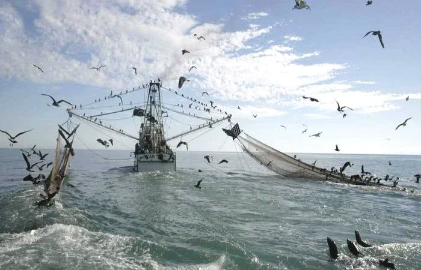
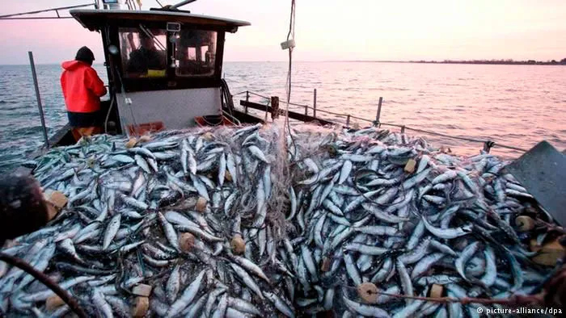
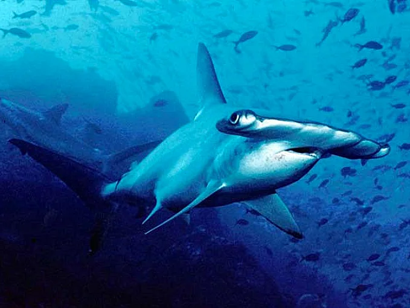
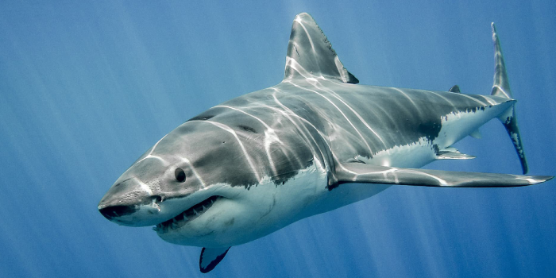
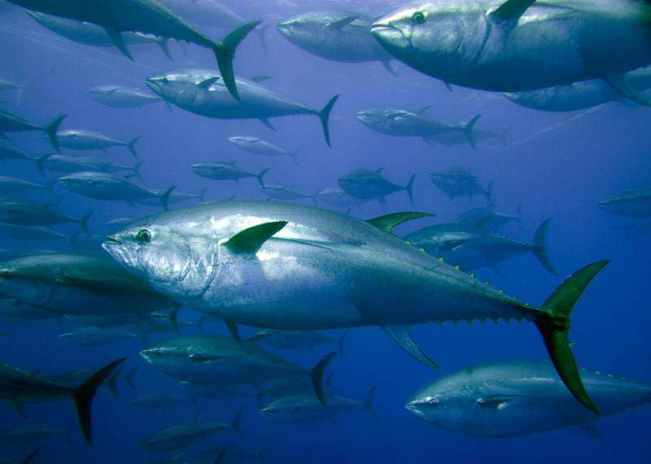
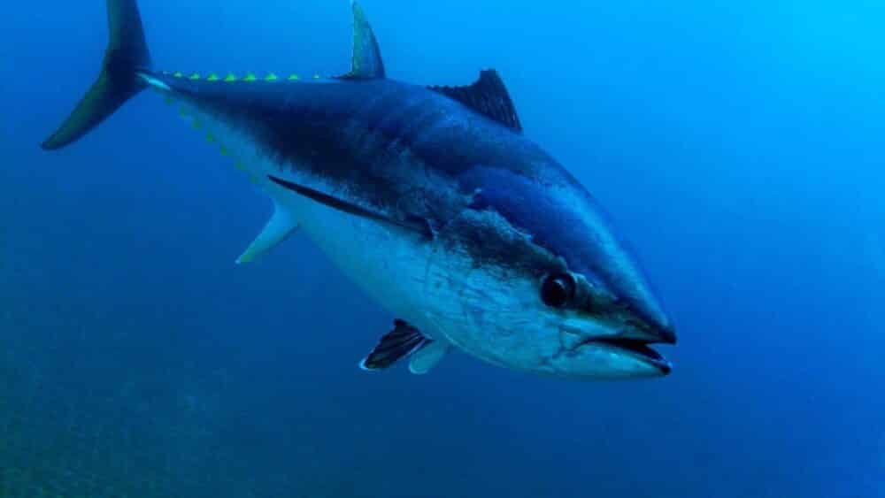
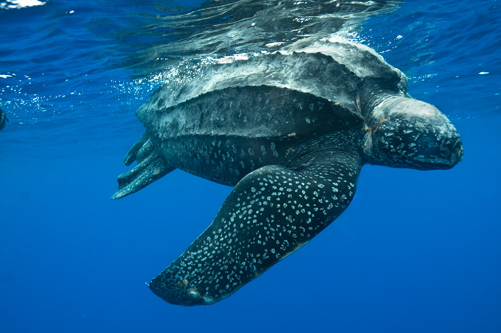
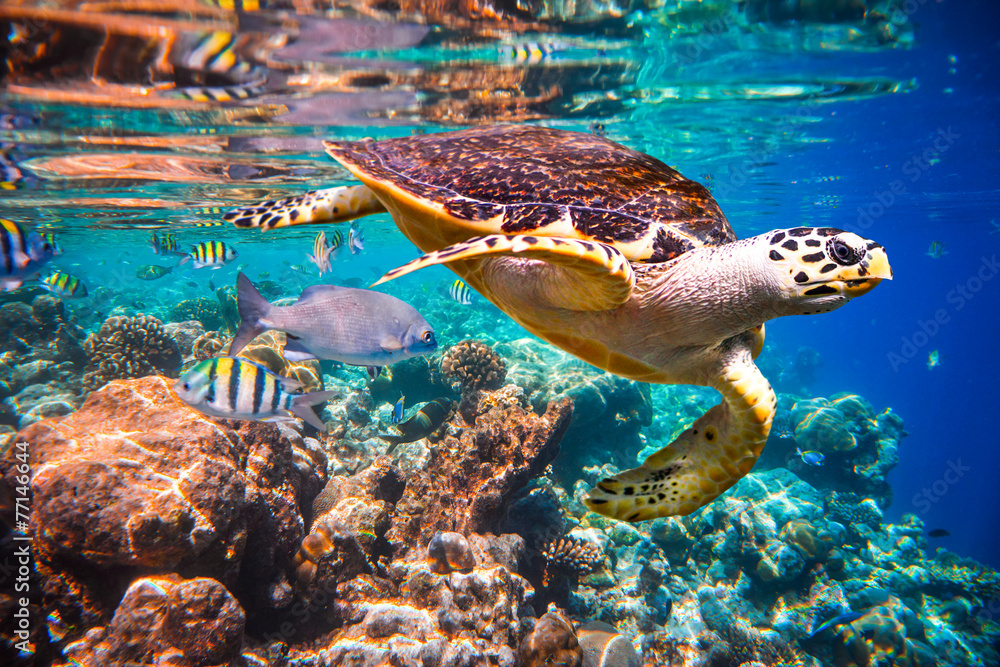

A pesca predatória é uma das maiores ameaças à biodiversidade marinha, caracterizada pela captura excessiva e muitas vezes ilegal de espécies aquáticas. Utilizando técnicas agressivas, como redes de arrasto e espinhel, essa prática não só esgota populações de peixes, mas também destrói habitats essenciais para a vida oceânica. O resultado é um desequilíbrio ecológico que afeta toda a cadeia alimentar, colocando em risco espécies já vulneráveis e comprometendo a saúde dos oceanos.
Um dos problemas mais graves associados à pesca predatória é a captura acidental, conhecida como "bycatch". Milhões de animais marinhos, incluindo tartarugas, golfinhos e aves oceânicas, morrem anualmente após ficarem presos em equipamentos de pesca destinados a outras espécies. Esse desperdício de vida marinha não apenas reduz a biodiversidade, mas também prejudica ecossistemas inteiros que dependem desses animais para manter seu equilíbrio natural.
Além disso, a pesca ilegal, não reportada e não regulamentada agrava ainda mais o problema. Embarcações que operam fora da lei frequentemente ignoram cotas de captura e áreas protegidas, explorando recursos marinhos sem qualquer controle. Essa atividade não só ameaça espécies ameaçadas de extinção, como também prejudica comunidades costeiras que dependem da pesca sustentável para seu sustento, criando conflitos sociais e econômicos.

Fonte Disponível em: sul21

Fonte Disponível em: Outras Palavras
A sobrepesca também tem consequências diretas para a segurança alimentar global. Com o declínio acelerado de estoques pesqueiros, muitas espécies comerciais estão à beira do colapso, como o atum-azul e o bacalhau. A diminuição desses recursos afeta não apenas o mercado internacional, mas também populações locais que têm no pescado sua principal fonte de proteína, aumentando a vulnerabilidade nutricional em regiões já empobrecidas.
Os métodos destrutivos da pesca predatória, como o arrasto de fundo, causam danos irreparáveis aos ecossistemas marinhos. Ao arrastar pesadas redes pelo leito oceânico, essa técnica destrói corais, esponjas e outras estruturas que servem de abrigo para inúmeras espécies. A recuperação desses habitats pode levar décadas, quando não séculos, deixando um rastro de destruição.
Enquanto isso, a falta de fiscalização eficiente e acordos internacionais fracos permitem que a pesca predatória continue a crescer. Muitas frotas industriais operam em águas internacionais, onde a regulamentação é mínima, explorando brechas legais para manter práticas insustentáveis.
A pesca predatória representa uma grave ameaça à sobrevivência de diversas espécies marinhas já classificadas como em risco de extinção. A captura indiscriminada, muitas vezes ilegal, tem acelerado o desaparecimento de animais icônicos e ecologicamente essenciais para os oceanos. Entre as espécies mais afetadas estão:
Espécies como o tubarão-branco, o tubarão-martelo e o tubarão-azul são alvos frequentes da pesca predatória devido à alta demanda por suas barbatanas, utilizadas na culinária asiática (prato conhecido como "sopa de barbatana de tubarão"). A prática do "finning" (corte das barbatanas e descarte do corpo no mar) é especialmente cruel e insustentável, reduzindo drasticamente suas populações.

Fonte Disponível em: Mar sem Fim

Fonte Disponível em: Natureza Animal
O atum-azul-do-Atlântico, altamente valorizado no mercado de sushi e sashimi, está criticamente ameaçado devido à sobrepesca. Sua captura excessiva, muitas vezes acima dos limites legais, tem levado a um colapso populacional, com estimativas indicando que sua população diminuiu mais de 80% nas últimas décadas.

Fonte Disponível em: Pensamento Verde

Fonte Disponível em: Segredos do mundo
Espécies como a tartaruga-de-couro e a tartaruga-de-pente são frequentemente capturadas acidentalmente em redes de pesca ou intencionalmente para o comércio ilegal de suas carapaças e carne. Sua lenta maturação sexual e baixa taxa de sobrevivência de filhotes agravam o risco de extinção.

Fonte Disponível em: Tamar

Fonte Disponível em: Coração de tartaruga
pesca ilegal
espécies extintas